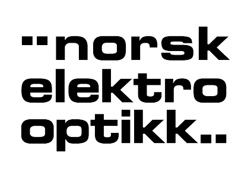

公司

Norsk Elektro Optikk AS（NEO）
成立于1985年，是一家私营电子光学领域的研究公司。
创始人拥有挪威国防研究机构的科学和技术背景，该机构在过去30至40年间一直是挪威电光学领域的领先研究机构。
该公司已发展成为挪威最大的电子光学独立研发机构，并已成为国际市场上先进电光产品的知名制造商。
NEO的高光谱成像活动于1995年开始，用于ESA的HISS（小型卫星高光谱成像仪）项目。 高光谱成像的研发活动部分来自参与欧盟的几个项目，以及由国防部和挪威研究理事会资助的项目以及通过技术商业化的内部资金。
NEO实验室和生产设施包括光学技术领域的高度专业化设备，如光谱和辐射校准源，用于聚焦，调整，测试和表征高光谱成像系统的实验室设备。 此外，内部还提供更多通用的激光技术，光学和电子实验室，以及用于快速原型制作的机械车间。
主要的NEO产品是LaserGas系列高级激光气体监测系统（ http://neomonitors.com/ ）和HySpex系列高端高光谱成像系统，适用于实验室，现场和机载应用（ www.hyspex.no ） 。 NEO已通过ISO 9001：2008国际质量标准认证。